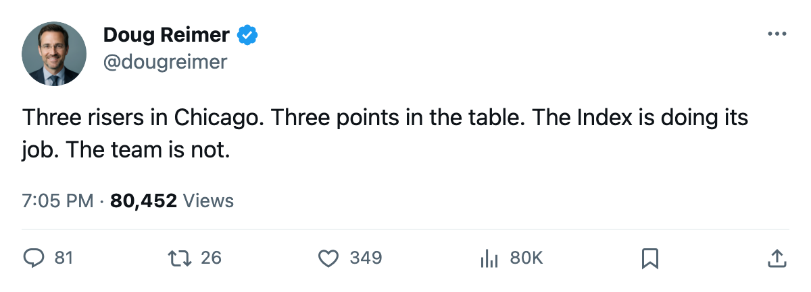
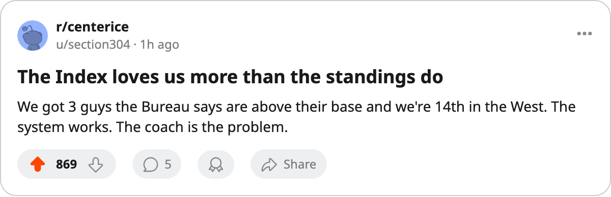

3 Risers, 3 Points: The Development Index Points at Chicago and the Table Points Away
The Bureau's form measure has 3 Black Hawks above their base. The standings have them 14th in the West at $16.25M a point.
 Doug ReimerAnalytics editor, ex-video coach · The Slot Report
Doug ReimerAnalytics editor, ex-video coach · The Slot Report
The Bureau's Development Index lists 20 risers this edition. Three wear  Chicago Blackhawks. Igor Radulov80 sits at +11, the third-biggest jump in the league.
Chicago Blackhawks. Igor Radulov80 sits at +11, the third-biggest jump in the league.  Steve McCarthy81 is at +8. Ari Ahonen89 is at +7. Only
Steve McCarthy81 is at +8. Ari Ahonen89 is at +7. Only  Toronto Maple Leafs, with 5 risers, carries more.
Toronto Maple Leafs, with 5 risers, carries more.
The standings say something else. Chicago is 1-0-2-1 with 3 points, 14th in the West, and $16.25M per point, third-worst in the league. The club with the most risers outside Toronto has the fewest points of any club that carries more than one.
| Club | Risers | Pts | Conference position |
|---|---|---|---|
| Toronto Maple Leafs | 5 | 12 | 1st, East |
| Chicago Blackhawks | 3 | 3 | 14th, West |
 Los Angeles Kings Los Angeles Kings | 2 | 6 | 10th, West |
 Edmonton Oilers Edmonton Oilers | 2 | 4 | 13th, West |
Three phases of the game, all flagged
The three risers cover three position groups. Radulov is a 23-year-old left winger, base 71, current 80. He has 3 points in 4 games. McCarthy is a 24-year-old defenseman, base 75 now 81, with 2 points in 4 games. Ahonen is a 24-year-old goaltender, base 81 now 89, carrying 100 percent of the workload in 4 games.
A single hot forward can tilt the Index at one slot. Three risers across position groups means the form improvement is not sitting in one line or one unit. It is in the crease, on the blue line, and on the wing at the same time.
The one faller on Chicago's sheet cuts the other direction:  Jay Pandolfo70 is at -4, base 76 now 70, with 0 points in 4 games. The Index says three specific men are playing above their base while one is sliding below.
Jay Pandolfo70 is at -4, base 76 now 70, with 0 points in 4 games. The Index says three specific men are playing above their base while one is sliding below.
Cost per point says the money is not converting
Chicago Blackhawks pays $48.74M for 3 points. Only  Ottawa Senators ($29.36M per point, 2 points) and
Ottawa Senators ($29.36M per point, 2 points) and  Phoenix Coyotes ($27.70M per point, 2 points) are worse on that measure.
Phoenix Coyotes ($27.70M per point, 2 points) are worse on that measure.
The mis-slot audit from May flagged players on third lines rated above their top-six teammates league-wide. Chicago's own hit is on the blue line:  Alexander Karpovtsev74, a 74-rated defenseman, plays the third pair above Burke Henry70, rated 70, on the second pair. A 4-point gap, small by the standards of what Columbus or Colorado showed, but it is the same shape.
Alexander Karpovtsev74, a 74-rated defenseman, plays the third pair above Burke Henry70, rated 70, on the second pair. A 4-point gap, small by the standards of what Columbus or Colorado showed, but it is the same shape.
Club morale is 93.2, tied for fifth in the league. The men are not unhappy. The form measure says they are improving. The record says 3 points.
What the Index does and does not do
The Development Index is the form term on the overall. A +11 means the current overall reads 11 above the base the Book carries. It does not predict wins. It describes what the players are showing this fortnight against their assigned grade. Radulov playing at 80 when his base is 71 says he is, right now, better than the 71 the Book had. Whether Chicago wins more games depends on whether his four teammates on the ice do the same.
The test is the next Index edition. If these three hold above +5 while the record moves, the Index was leading. If they fall back while the record doesn't, it was noise in a 4-game sample. Both readings are defensible at this point in the season.
Chicago plays  Minnesota Wild at home today and visits
Minnesota Wild at home today and visits  Carolina Hurricanes on Friday. After those two the sample will be 6 games, still short, but long enough to separate the three risers from the rest of the roster. If Radulov, McCarthy, and Ahonen keep outperforming their bases while the other 20 men on the roster don't, the problem is not the Index. The problem is that 3 risers don't win enough games on their own.
Carolina Hurricanes on Friday. After those two the sample will be 6 games, still short, but long enough to separate the three risers from the rest of the roster. If Radulov, McCarthy, and Ahonen keep outperforming their bases while the other 20 men on the roster don't, the problem is not the Index. The problem is that 3 risers don't win enough games on their own.

